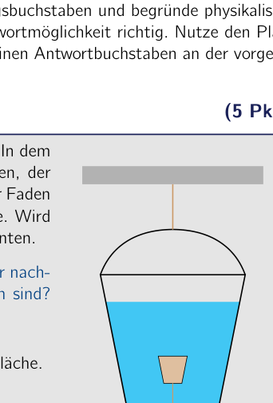
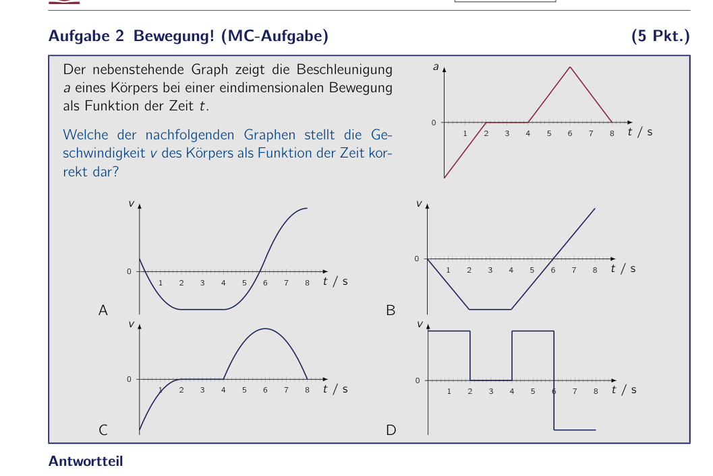
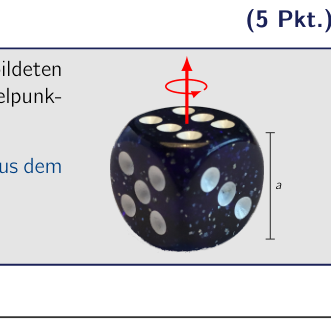
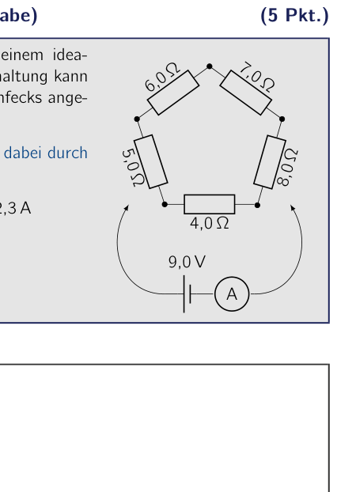
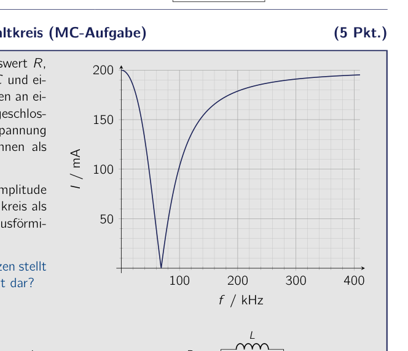
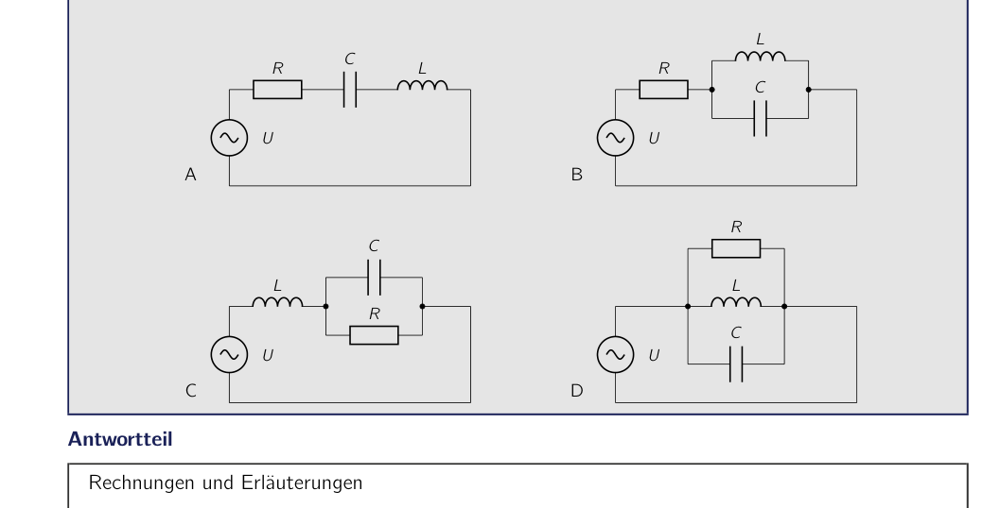
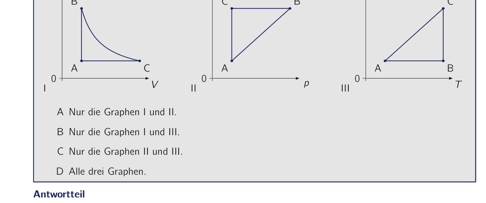

Problem 1 Cork in the bucket (MC problem) (5 pts.) A bucket filled with water is suspended from a rope. Inside the bucket, as shown alongside, there is a cork that is attached to the bottom of the bucket by a thread. When the thread is cut, the cork rises to the water surface. If the rope on the bucket is cut, the bucket falls downward with its contents. How does the cork move relative to the bucket, immediately after the rope and the thread have been cut simultaneously? A The cork rises faster to the water surface. B The cork rises to the water surface at exactly the same speed. C The cork stays at rest. D The cork sinks to the bottom of the bucket. Answer section Calculations and explanations Correct answer: 50th IPhO 2019 - 2nd Round exam Code: Code 3 / 24

bucket with cork tied to the bottomTopic: Fluid Mechanics, Newtonian Mechanics Metodi: Hydrostatic Equilibrium, Free-Body Diagram, Physical Modeling Competenze: Physical Reasoning, Diagrammatic Reasoning Objects: Container, String Fonte: Testo (PDF) — p.2
Problema 1 Cork in the bucket (problema MC) (cfr. Un secchio pieno di acqua è sospeso da una corda. All’interno del Bucket, come mostrato accanto, c’è un cannuccio che è attaccato al fondo del secchio da un filo. Quando il filo è tagliato, il cork sale alla superficie dell’acqua. If La corda sul secchio è tagliata, il secchio cade verso il basso con il suo contenuto. Come si muove il canne rispetto al secchio, immediatamente dopo che la corda e il filo sono stati tagliati contemporaneamente? Il cork si eleva più velocemente alla superficie dell’acqua. B Il canne si eleva alla superficie dell’acqua alla stessa velocità. C. Il corco resta. D Il canne si scende al fondo del secchio. Answer section Calcoli e spiegazioni Corretta risposta: 50° IPhO 2019 - 2° round exam Codice: Codice 3 / 24
bucket with cork tied to the bottom
Topic: Fluid Mechanics, Newtonian Mechanics Metodi: Hydrostatic Equilibrium, Free-Body Diagram, Physical Modeling Competenze: Physical Reasoning, Diagrammatic Reasoning Objects: Container, String Fonte: Testo (PDF) — p.2
Problem 1 Cork in the bucket (MC problem) (five points) A bucket filled with water is suspended from a rope. Inside the bucket, as shown alongside, there is a cork that is attached to the bottom of the bucket by a thread. When the thread is cut, the cork rises to the water surface. If The rope on the bucket is cut, the bucket falls downward with its contents. How does the cork move relative to the bucket, immediately after the rope and the thread have been cut simultaneously? A. The cork rises faster to the water surface. B The cork rises to the water surface at exactly the same speed. C. The cork stays at rest. D The cork sinks to the bottom of the bucket. Answer section Calculations and explanations Correct answer: 50th IPhO 2019 - 2nd round exam The code: Code 3 / 24
bucket with cork tied to the bottom
Topic: Fluid Mechanics, Newtonian Mechanics Metodi: Hydrostatic Equilibrium, Free-Body Diagram, Physical Modeling Competenze: Physical Reasoning, Diagrammatic Reasoning Objects: Container, String Fonte: Testo (PDF) — p.2
Problem 2 Motion! (MC problem) (5 pts.) The graph alongside shows the acceleration a of a body in a one-dimensional motion as a function of time t. Which of the following graphs correctly represents the velocity v of the body as a function of time? 1 2 3 4 5 6 7 8 0 t / s a A 1 2 3 4 5 6 7 8 0 t / s v B 1 2 3 4 5 6 7 8 0 t / s v C 1 2 3 4 5 6 7 8 0 t / s v D 1 2 3 4 5 6 7 8 0 t / s v Answer section Calculations and explanations Correct answer: 50th IPhO 2019 - 2nd Round exam Code: Code 4 / 24

graph a(t) and four graphs v(t)Topic: Newtonian Mechanics Metodi: Kinematic Equations, Calculus-Integration Competenze: Physical Reasoning, Diagrammatic Reasoning Objects: — Fonte: Testo (PDF) — p.3
Il problema è due mozioni! (problema MC) (cfr. Il grafico che segue mostra l’accelerazione a of a body in a one-dimensional motion come funzione del tempo t. Quale dei grafici seguenti rappresenta correttamente la velocità v del corpo come funzione di tempo? 1 2 3 4 5 6 7 8 0 t / s a A 1 2 3 4 5 6 7 8 0 t / s v B 1 2 3 4 5 6 7 8 0 t / s v C 1 2 3 4 5 6 7 8 0 t / s v D 1 2 3 4 5 6 7 8 0 t / s v Answer section Calcoli e spiegazioni Corretta risposta: 50° IPhO 2019 - 2° round exam Codice: Codice 4 / 24
*grafico a(t) e quattro grafici v(t) *
Topic: Newtonian Mechanics Metodi: Kinematic Equations, Calculus-Integration Competenze: Physical Reasoning, Diagrammatic Reasoning Objects: — Fonte: Testo (PDF) — p.3
Problem two motion! (MC problem) (five points) The graph alongside shows the acceleration a of a body in a one-dimensional motion as a function of time t. Which of the following graphs correctly represents the velocity v of the body as a function of time? 1 2 3 4 5 6 7 8 0 t / s a A 1 2 3 4 5 6 7 8 0 t / s v B 1 2 3 4 5 6 7 8 0 t / s v C 1 2 3 4 5 6 7 8 0 t / s v D 1 2 3 4 5 6 7 8 0 t / s v Answer section Calculations and explanations Correct answer: 50th IPhO 2019 - Second Round exam The code: Code 4 / 24
*graph a(t) and four graphs v(t) *
Topic: Newtonian Mechanics Metodi: Kinematic Equations, Calculus-Integration Competenze: Physical Reasoning, Diagrammatic Reasoning Objects: — Fonte: Testo (PDF) — p.3
Problem 3 Rotating cube (MC problem) (5 pts.) Let I denote the moment of inertia of the cube shown alongside for rotation about the indicated axis through the midpoints of two opposite faces. What is the corresponding moment of inertia of a cube made of the same material but with twice the edge length a? A 2 I B 4 I C 16 I D 32 I a Answer section Calculations and explanations Correct answer: 50th IPhO 2019 - 2nd Round exam Code: Code 5 / 24

rotating cube with axis and dimension aTopic: Rotational Dynamics Metodi: Dimensional Analysis, Physical Modeling Competenze: Physical Reasoning, Mathematical Modeling Objects: — Fonte: Testo (PDF) — p.4
Problema 3 Cubo di rotazione (problema MC) (cfr. Lascia che denotare il momento di inerzia del cubo mostrato al fianco per rotazione intorno all’asse indicato attraverso i punti di metà di due facce opposte. Qual è il momento corrispondente di inerzia di un cubo fatto del Lo stesso materiale, ma con due volte la lunghezza di punta? A 2 I B 4 I C 16 I D 32 I a Answer section Calcoli e spiegazioni Corretta risposta: 50° IPhO 2019 - 2° round exam Codice: Codice 5 / 24
- rotating cube with axis and dimension a*
Topic: Rotational Dynamics Metodi: Dimensional Analysis, Physical Modeling Competenze: Physical Reasoning, Mathematical Modeling Objects: — Fonte: Testo (PDF) — p.4
The following table shows the results of the calculations: (five points) Let me denote the moment of inertia of the cube shown alongside for rotation about the indicated axis through the midpoints of two opposite faces. What is the corresponding moment of inertia of a cube made of the Same material but with twice the edge length a? A 2 I B 4 I C 16 I D 32 I a Answer section Calculations and explanations Correct answer: 50th IPhO 2019 - Second Round exam The code: Code 5 / 24
rotating cube with axis and dimension a
Topic: Rotational Dynamics Metodi: Dimensional Analysis, Physical Modeling Competenze: Physical Reasoning, Mathematical Modeling Objects: — Fonte: Testo (PDF) — p.4
Problem 4 Power of gravitational waves (MC problem) (5 pts.) The general theory of relativity predicts the existence of gravitational waves, that is, waves in the structure of spacetime. These waves are produced by accelerated masses and propagate at the speed of light. For two bodies of equal mass m orbiting each other at a distance r, the power P radiated by gravitational waves can be expressed in terms of the gravitational constant G and the vacuum speed of light c. Which of the following expressions could represent a suitable expression for the power P? A B C D Answer section Calculations and explanations Correct answer: 50th IPhO 2019 - 2nd Round exam Code: Code 6 / 24
Topic: Gravitation Metodi: Dimensional Analysis, Newton’s Law of Gravitation Competenze: Physical Reasoning, Mathematical Modeling Objects: — Fonte: Testo (PDF) — p.5
Problema 4 Potenza delle onde gravitazionali (problema MC) (cfr. La teoria generale della relatività predice l’esistenza di onde gravitazionali, cioè onde nella struttura dello spazio-tempo. Queste onde sono prodotte da masse accelerate e propagate alla velocità della luce. Per due corpi di massa uguale m che orbitano a distanza r, il Potenza P irradiata da onde gravitazionali può essere espressa in termini della costante gravitazionale G e la velocità di luce a vuoto c. Quale delle seguenti espressioni potrebbe rappresentare un’espressione adatta per la potenza P? A B C D Answer section Calcoli e spiegazioni Corretta risposta: 50° IPhO 2019 - 2° round exam Codice: Codice 6 / 24
Topic: Gravitation Metodi: Dimensional Analysis, Newton’s Law of Gravitation Competenze: Physical Reasoning, Mathematical Modeling Objects: — Fonte: Testo (PDF) — p.5
The power of gravitational waves (MC problem) (five points) The general theory of relativity predicts the existence of gravitational waves, that is, waves in the structure of space-time. These waves are produced by accelerated masses and propagate At the speed of light. For two bodies of equal mass m orbiting each other at a distance r, the power P radiated by gravitational waves can be expressed in terms of the gravitational constant G and the The speed of light is c. Which of the following expressions could represent a suitable expression for the power P? A B C D Answer section Calculations and explanations Correct answer: 50th IPhO 2019 - Second Round exam The code: Code 6 / 24
Topic: Gravitation Metodi: Dimensional Analysis, Newton’s Law of Gravitation Competenze: Physical Reasoning, Mathematical Modeling Objects: — Fonte: Testo (PDF) — p.5
Problem 5 Lens collection (MC problem) (5 pts.) From the depths of the physics collection, your physics teacher has brought out a box with three thin lenses, labelled I, II and III. Lenses I and II are biconvex, whereas lens III is concave on both sides. To determine the focal lengths of the lenses you helped your teacher carry out several imaging experiments. For this you positioned an object at a distance of 50.0 cm from one of the lenses, or from a combination of two lenses placed close behind one another, and measured the distance between the lens (or lens system) and the resulting real image of the object. The table alongside gives the image distances measured in the individual experiments. Unfortunately, from the second experiment onward your teacher forgot to write down which of the lens(es) was/were used in each case, but perhaps you can nevertheless answer the following question: Experiment Lens(es) Image distance j 1 I 21,4 cm j 2 50,2 cm j 3 11,6 cm j 4 30,9 cm j 5 175,0 cm Which of the lens(es) was/were used in the individual experiments? A j 2 : I & III j 3 : I & II j 4 : II j 5 : II & III B j 2 : I & III j 3 : II j 4 : II & III j 5 : I & II C j 2 : II j 3 : I & II j 4 : I & III j 5 : II & III D j 2 : II & III j 3 : II j 4 : I & II j 5 : I & III Answer section Calculations and explanations Correct answer: 50th IPhO 2019 - 2nd Round exam Code: Code 7 / 24
Topic: Geometric Optics Metodi: Thin Lens & Mirror Equation, Experimental Data Analysis Competenze: Physical Reasoning, Mathematical Modeling Objects: Lens Fonte: Testo (PDF) — p.6
Problema 5 Lens collection (problema MC) (cfr. Dal profondo della collezione di fisica, il tuo insegnante di fisica ha portato fuori una scatola con tre lenti sottili, etichettate come I, II e III. Lenti I e II sono biconvex, mentre Il lente III è concavo su entrambi i lati. Per determinare le lunghezze focali dei lenti ha aiutato il suo insegnante a condurre diversi esperimenti di immaginazione. Per questo posizionato un oggetto a una distanza di 50 cm da uno dei lenti o da una combinazione di due lenti posizionate vicino l’una all’altra, e Measure the distance between the lens (or lens system) and l’immagine reale risultante dell’oggetto. La tabella di fianco mostra le distanze di immagine misurate negli esperimenti individuali. Sfortunatamente, dal secondo esperimento in poi, il maestro ha dimenticato di scrivere quale delle lenti è stato utilizzato in ogni caso, ma forse potete comunque rispondere alla seguente domanda: Esperimento Lens (es) Distanza di immagine j 1 I 21,4 cm j 2 50,2 cm j 3 11,6 cm j 4 30,9 cm j 5 175,0 cm Quali delle lenti sono state utilizzate negli esperimenti individuali? A j 2 : I & III j 3 : I & II j 4 : II j 5 : II & III B j 2 : I & III j 3 : II j 4 : II & III j 5 : I & II C j 2 : II j 3 : I & II j 4 : I & III j 5 : II & III D j 2 : II & III j 3 : II j 4 : I & II j 5 : I & III Answer section Calcoli e spiegazioni Corretta risposta: 50° IPhO 2019 - 2° round exam Codice: Codice 7 / 24
Topic: Geometric Optics Metodi: Thin Lens & Mirror Equation, Experimental Data Analysis Competenze: Physical Reasoning, Mathematical Modeling Objects: Lens Fonte: Testo (PDF) — p.6
The following is the list of the problems: (five points) From the depths of the physics collection, your physics teacher has brought out a box with three thin lenses, labeled I, II and III. Lenses I and II are biconvex, whereas lens III is concave on both sides. To determine the focal lengths of the lenses you helped your teacher carry out several imaging experiments. For this you positioned an object at a distance of 50.0 cm from one of the lenses, or from a combination of Two lenses placed close behind each other, and measured the distance between the lens (or lens system) and The resulting real image of the object. The table alongside gives the image distances measured in the individual experiments. Unfortunately, from the second experiment onward your teacher forgot to write down which of the lenses (s) were used in each case, but perhaps you can nevertheless answer the following question: Experiment The Commission shall adopt implementing acts in accordance with Article 21 of this Regulation. Image distance j 1 I 21,4 cm j 2 50,2 cm j 3 11,6 cm j 4 30,9 cm j 5 175,0 cm Which of the lenses were used in the individual experiments? A j 2 : I & III j 3 : I & II j 4 : II j 5 : II & III B j 2 : I & III j 3 : II j 4 : II & III j 5 : I & II C j 2 : II j 3 : I & II j 4 : I & III j 5 : II & III D j 2 : II and III j 3 : II j 4 : I & II j 5 : I & III Answer section Calculations and explanations Correct answer: 50th IPhO 2019 - Second Round exam The code: Code 7 / 24
Topic: Geometric Optics Metodi: Thin Lens & Mirror Equation, Experimental Data Analysis Competenze: Physical Reasoning, Mathematical Modeling Objects: Lens Fonte: Testo (PDF) — p.6
Problem 6 Pentagon of resistors (MC problem) (5 pts.) A battery with a voltage of 9.0 V is connected in series with an ideal ammeter. The series circuit can be connected to any two corners of the resistor pentagon shown. What is the smallest current, in magnitude, that flows through the ammeter in this case? A 0,30 A B 0,60 A C 1,2 A D 2,3 A 4,0 Ω 5,0 Ω 6,0 Ω 7,0 Ω 8,0 Ω A 9,0 V Answer section Calculations and explanations Correct answer: 50th IPhO 2019 - 2nd Round exam Code: Code 8 / 24

pentagon circuit of resistors with batteryTopic: Circuits Metodi: Kirchhoff’s Laws, Equivalent Circuit Reduction, Symmetry Argument Competenze: Physical Reasoning, Mathematical Modeling Objects: Resistor, Battery, Galvanometer Fonte: Testo (PDF) — p.7
Il problema 6 è il Pentagono dei resistori (problema MC) (cfr. Una batteria con una tensione di 9,0 V è collegata in serie con un ammetro ideale. Il circuito della serie può essere collegato a due angoli della resistenza Pentagono mostrato. Qual è la corrente più piccola, in magnitudo, che scorre attraverso l’ammetro in questo caso? A 0,30 A B 0,60 A C 1,2 A D 2,3 A 4,0 Ω 5,0 Ω 6,0 Ω 7,0 Ω 8,0 Ω A 9,0 V Answer section Calcoli e spiegazioni Corretta risposta: 50° IPhO 2019 - 2° round exam Codice: Codice 8 / 24
*corrente di resistori con batteria
Topic: Circuits Metodi: Kirchhoff’s Laws, Equivalent Circuit Reduction, Symmetry Argument Competenze: Physical Reasoning, Mathematical Modeling Objects: Resistor, Battery, Galvanometer Fonte: Testo (PDF) — p.7
Problem 6 Pentagon of resistors (MC problem) (five points) A battery with a voltage of 9.0 V is connected in series with an ideal ammeter. The series circuit can be connected to any two corners of the resistor pentagon shown. What is the smallest current, in magnitude, that flows through The ammeter in this case? A 0,30 A B 0,60 A C 1,2 A D 2,3 A 4,0 Ω 5,0 Ω 6,0 Ω 7,0 Ω 8,0 Ω A 9,0 V Answer section Calculations and explanations Correct answer: 50th IPhO 2019 - Second Round exam The code: Code 8 / 24
pentagon circuit of resistors with battery
Topic: Circuits Metodi: Kirchhoff’s Laws, Equivalent Circuit Reduction, Symmetry Argument Competenze: Physical Reasoning, Mathematical Modeling Objects: Resistor, Battery, Galvanometer Fonte: Testo (PDF) — p.7
Problem 7 Fields (MC problem) (5 pts.) A very light, charged particle is accelerated through a voltage U. It then flies into a region that is permeated by a constant magnetic field perpendicular to the direction of motion of the particle. In this region the particle describes a circular arc with a circular radius of r = 1.50 cm. Now an electric field of constant field strength is switched on, which is oriented perpendicular both to the magnetic field and to the instantaneous direction of motion of the particle. The particle thereupon continues to move in a straight line. What is the voltage U with which the particle was initially accelerated? A 110 V B 220 V C 330 V D 440 V Answer section Calculations and explanations Correct answer: 50th IPhO 2019 - 2nd Round exam Code: Code 9 / 24
Topic: Electromagnetism, Electrostatics Metodi: Lorentz Force Analysis, Energy Conservation Method Competenze: Physical Reasoning, Mathematical Modeling Objects: Point Charge Fonte: Testo (PDF) — p.8
Problema 7 Fields (problema MC) (cfr. Una particella molto leggera e carica è accelerata attraverso un voltage U. E poi vola in una regione permeata da un campo magnetico costante perpendicolare alla direzione di movimento del
- Particella. In questa regione la particella descrive un arco circolare con un radius circolare di r = 1,50 cm. Ora un campo elettrico di forza di campo costante è acceso, che è orientato perpendicolare sia al campo magnetico che alla direzione istantanea del movimento della particella. La particella continua a muoversi in linea retta. Qual è la tensione U con cui la particella è stata inizialmente accelerata? A 110 V B 220 V C 330 V D 440 V Answer section Calcoli e spiegazioni Corretta risposta: 50° IPhO 2019 - 2° round exam Codice: Codice 9 / 24
Topic: Electromagnetism, Electrostatics Metodi: Lorentz Force Analysis, Energy Conservation Method Competenze: Physical Reasoning, Mathematical Modeling Objects: Point Charge Fonte: Testo (PDF) — p.8
The problem is 7 fields (MC problem) (five points) A very light, charged particle is accelerated through a voltage U. It then flies into a region that is permeated by a constant magnetic field perpendicular to the direction of motion of the The particles. In this region the particle describes a circular arc with a The radius of r = 1,50 cm. Now an electric field of constant field strength is switched on, which is oriented perpendicular both to the magnetic field and to the instantaneous direction of motion of the particle. The particle then continues to move in a straight line. What is the voltage U with which the particle was initially accelerated? A 110 V B 220 V C 330 V D 440 V Answer section Calculations and explanations Correct answer: 50th IPhO 2019 - Second Round exam The code: Code 9 / 24
Topic: Electromagnetism, Electrostatics Metodi: Lorentz Force Analysis, Energy Conservation Method Competenze: Physical Reasoning, Mathematical Modeling Objects: Point Charge Fonte: Testo (PDF) — p.8
Problem 8 Alternating-current circuit (MC problem) (5 pts.) A resistor of resistance R, a capacitor of capacitance C and a coil of inductance L are connected to an alternating-voltage source. The amplitude of the alternating voltage is U and the components can be assumed to be ideal. The following graph shows the amplitude I of the current in the circuit as a function of the frequency f of the sinusoidal alternating voltage. Which of the following circuit diagrams correctly represents the circuit used? 100 200 300 400 50 100 150 200 f / kHz I / mA R C L U A R L C U B L C R U C R C L U D Answer section Calculations and explanations Correct answer: 50th IPhO 2019 - 2nd Round exam Code: Code 10 / 24

graph of current amplitude vs frequency RLC
four RLC circuits, choices A B C DTopic: Circuits, Oscillations & Waves Metodi: Kirchhoff’s Laws, Simple Harmonic Motion Analysis, Physical Modeling Competenze: Physical Reasoning, Diagrammatic Reasoning Objects: Resistor, Capacitor, Inductor Fonte: Testo (PDF) — p.9
Problema 8 Circuito alternativo corrente (problema MC) (cfr. Un resistore di resistenza R, un condensatore di capacità C e una bobina di inductanza L sono collegati a una fonte di voltaggio alternativo. L’ampiezza della volta alternata è U e i componenti possono essere
- Assumendo di essere ideale. Il grafico seguente mostra l’amplitude I del corrente nel circuito come un funzione della frequenza f della sinusoidale voltazione alternativa. Which of the following circuit diagrams correctly represents Il circuito usato? 100 200 300 400 50 100 150 200 f / kHz I / mA R C L U A R L C U B L C R U C R C L U D Answer section Calcoli e spiegazioni Corretta risposta: 50° IPhO 2019 - 2° round exam Codice: Codice 10 / 24
graph of current amplitude vs frequency RLC
*4 circuiti RLC, scelte A B C D *
Topic: Circuits, Oscillations & Waves Metodi: Kirchhoff’s Laws, Simple Harmonic Motion Analysis, Physical Modeling Competenze: Physical Reasoning, Diagrammatic Reasoning Objects: Resistor, Capacitor, Inductor Fonte: Testo (PDF) — p.9
The following is the list of the types of electrical power generated by the electrical power generated by the electrical power generated by the electrical power generated by the electrical power generated by the electrical power generated by the electrical power generated by the electrical power generated by the electrical power generated by the electrical power generated by the electrical power generated by the electrical power generated by the electrical power generated by the electrical power generated by the electrical power generated by the electrical power generated by the electrical power generated by the electrical power generated by the electrical power generated by the electrical power generated electrical power. (five points) A resistor of resistance R, a capacitor of capacitance C and a coil of inductance L are connected to an alternating-voltage source. The amplitude of the alternating voltage is U and the components can be assumed to be ideal. The following graph shows the amplitude I of the current in the circuit as a function of the frequency f of the sinusoidal alternating voltage. Which of the following circuit diagrams correctly represents The circuit used? 100 200 300 400 50 100 150 200 F / kHz I / mA R C L U A R L C U B L C R U C R C L U D Answer section Calculations and explanations Correct answer: 50th IPhO 2019 - Second Round exam The code: Code 10 / 24
The following table shows the current amplitude and frequency of the current amplitude and frequency of the current amplitude and frequency of the current amplitude and frequency of the current amplitude and frequency of the current amplitude.
The following is the list of the main components of the RLC:
Topic: Circuits, Oscillations & Waves Metodi: Kirchhoff’s Laws, Simple Harmonic Motion Analysis, Physical Modeling Competenze: Physical Reasoning, Diagrammatic Reasoning Objects: Resistor, Capacitor, Inductor Fonte: Testo (PDF) — p.9
Problem 9 Cyclic process (MC problem) (5 pts.) An ideal gas undergoes a cyclic process. Starting from state A it is first heated at constant volume up to a state B, then it expands without a change in temperature up to a state C and is finally compressed isobarically back to the initial state A. Let p, V and T denote the pressure, the volume and the temperature of the gas. Which of the following graphs correctly represent the cyclic process? I 0 A B C V p II 0 A B C p T III 0 A B C T V A Only graphs I and II. B Only graphs I and III. C Only graphs II and III. D All three graphs. Answer section Calculations and explanations Correct answer: 50th IPhO 2019 - 2nd Round exam Code: Code 11 / 24

three graphs of thermodynamic cycle p-V, T-p, V-TTopic: Thermodynamics Metodi: Ideal Gas Law, Thermodynamic Cycle Analysis, First Law of Thermodynamics Competenze: Physical Reasoning, Diagrammatic Reasoning Objects: Gas Fonte: Testo (PDF) — p.10
Problema 9 Processo ciclico (problema MC) (cfr. Il gas ideale subisce un processo ciclico. Partendo dallo stato A è stato caldo per primo volume costante fino a uno stato B, poi si espandono senza un cambiamento di temperatura fino a uno stato C e finalmente vengono compresse isobaricamente indietro allo stato iniziale A. Let p, V e T indicano la pressione, il volume e la temperatura del gas. Quali dei seguenti grafici rappresentano correttamente il processo ciclico? I 0 A B C V p II 0 A B C p T III 0 A B C T V A Only grafici I e II. B Only grafici I e III. C Only grafici II e III. D Tutti e tre i grafici. Answer section Calcoli e spiegazioni Corretta risposta: 50° IPhO 2019 - 2° round exam Codice: Codice 11 / 24
three graphs of thermodynamic cycle p-V, T-p, V-T
Topic: Thermodynamics Metodi: Ideal Gas Law, Thermodynamic Cycle Analysis, First Law of Thermodynamics Competenze: Physical Reasoning, Diagrammatic Reasoning Objects: Gas Fonte: Testo (PDF) — p.10
The following is the list of the problems: (five points) The ideal gas undergoes a cyclic process. Starting from state A it is first heated at It expands without a change in temperature up to a state C and is finally compressed isobarically back to the initial state A. Let p, V and T denote the pressure, the volume and the temperature of the gas. Which of the following graphs correctly represents the cyclic process? I 0 A B C V p II 0 A B C p T The Commission 0 A B C T V A only graphs I and II. B Only graphs I and III. C Only graphs II and III. D all three graphs. Answer section Calculations and explanations Correct answer: 50th IPhO 2019 - Second Round exam The code: Code 11 / 24
The thermodynamic cycle is defined as the thermodynamic cycle of the system.
Topic: Thermodynamics Metodi: Ideal Gas Law, Thermodynamic Cycle Analysis, First Law of Thermodynamics Competenze: Physical Reasoning, Diagrammatic Reasoning Objects: Gas Fonte: Testo (PDF) — p.10
Problem 10 Melting ice (MC problem) (5 pts.) On a cold winter day, three identical, uninsulated wooden boxes stand in front of the house, each filled with the same amount of ice at a temperature of . To melt the ice, an electric heating element is placed in each of the boxes. The heating elements are identical but are operated at different voltages. In the first box the heating element is operated at a voltage of 80 V. All the ice in the box then melts in 20.0 minutes. A voltage of 120 V is applied to the heating element of the second box, whereupon the ice melts completely in only 4.0 minutes. In the third box a voltage of 40 V is used for the heating element. The heating elements are constructed so that they heat the entire mass of ice in the respective box simultaneously. Assume that the meltwater is not heated by the heating element. Which of the following statements is then correct for the melting of the ice in the third box? A Melting all the ice in the third box takes about 80 minutes. B Melting all the ice in the third box takes about 100 minutes. C Melting all the ice in the third box takes about 130 minutes. D With the voltage used it is not possible to melt all of the ice. Answer section Calculations and explanations Correct answer: 50th IPhO 2019 - 2nd Round exam Code: Code 12 / 24 Long problems Work on the following three problems likewise in the boxes provided. Unlike the multiple-choice problems, no answer options are given. Describe your solution method so that it is easy to follow but not unnecessarily long. So if, for example, you use the law of conservation of energy, write this down briefly.
Topic: Thermodynamics, Circuits Metodi: First Law of Thermodynamics, Physical Modeling Competenze: Physical Reasoning, Mathematical Modeling Objects: Resistor Fonte: Testo (PDF) — p.11
Problema 10 Melting ice (problema MC) (cfr. In un giorno di inverno freddo, tre identiche, scatole di legno non isolate si trovavano di fronte alla casa, ognuna filled with the same amount of ice at a temperature of . Per sciogliere il ghiaccio, un elemento di riscaldamento elettrico viene inserito in ciascuna delle scatole. I calori sono identici Ma sono operati a diverse tensioni. In the first box the heating element is operated at a voltage of 80 V. Tutti i Il ghiaccio nella scatola si scioglie in 20,0 minuti. Una volta di 120 V viene applicata all’elemento di riscaldamento della seconda scatola, e il ghiaccio si scioglie completamente in soli 4,0 minuti. In per il caldo è utilizzata una volta di 40 V. Gli elementi di riscaldamento sono costruiti in modo da riscaldare simultaneamente l’intera massa di ghiaccio nella rispettiva scatola. Supponiamo che l’acqua di fusione non sia riscaldata dall’elemento di riscaldamento. Quale delle seguenti affermazioni è corretta per il melting of the ice in the third box? Un melting all the ice in the third box richiede circa 80 minuti. B: Fonde tutto il ghiaccio nella terza scatola, ci vogliono circa 100 minuti. C. Fondere tutto il ghiaccio nella terza scatola richiede circa 130 minuti. D Con la tensione utilizzata non è possibile fondere tutto il ghiaccio. Answer section Calcoli e spiegazioni Corretta risposta: 50° IPhO 2019 - 2° round exam Codice: Codice 12 / 24 Long problemi Work on the following three problems similarly in the boxes provided. A differenza dei problemi di scelta multipla, non sono state indicate le opzioni di risposta. Descrivere il metodo di soluzione in modo tale che E’ facile da seguire, ma non troppo a lungo. Quindi se, per esempio, si usa la legge della conservazione dell’energia, scrivete brevemente.
Topic: Thermodynamics, Circuits Metodi: First Law of Thermodynamics, Physical Modeling Competenze: Physical Reasoning, Mathematical Modeling Objects: Resistor Fonte: Testo (PDF) — p.11
The following is the list of the types of ice used: (five points) On a cold winter day, three identical, uninsulated wooden boxes stood in front of the house, each filled with the same amount of ice at a temperature of . To melt the ice, an electric heating element is placed in each of the boxes. The heating elements are identical but are operated at different voltages. In the first box the heating element is operated at a voltage of 80 V. All the Ice in the box then melts in 20.0 minutes. A voltage of 120 V is applied to the heating element of the second box, whereupon the ice melts completely in only 4.0 minutes. In the a voltage of 40 V is used for the heating element. The heating elements are constructed so that they heat the entire mass of ice in the respective box simultaneously. Assume that the meltwater is not heated by the heating element. Which of the following statements is correct for the melting of the ice in the third box? Melting all the ice in the third box takes about 80 minutes. B. Melting all the ice in the third box takes about 100 minutes. Melting all the ice in the third box takes about 130 minutes. D With the voltage used it is not possible to melt all of the ice. Answer section Calculations and explanations Correct answer: 50th IPhO 2019 - Second Round exam The code: Code 12 / 24 Long problems Work on the following three problems also in the boxes provided. Unlike the Multiple-choice problems, no answer options are given. Describe your solution method so that It’s easy to follow but not unnecessarily long. So if, for example, you use the law of conservation of energy, write this down briefly.
Topic: Thermodynamics, Circuits Metodi: First Law of Thermodynamics, Physical Modeling Competenze: Physical Reasoning, Mathematical Modeling Objects: Resistor Fonte: Testo (PDF) — p.11
Problem 11 Capacitor discharge (20 pts.) A charged capacitor is discharged through an unknown resistor. The left of the tables below lists the discharge current I of the capacitor as a function of time t. In a second experiment the recharged capacitor is discharged through the unknown resistor in series with a series resistor of . The corresponding values of the discharge current are listed in the right table. Discharge without series resistor Discharge with series resistor t / s / t / s / 0 0,96 0 0,63 10 0,81 10 0,56 20 0,69 20 0,51 30 0,59 30 0,46 40 0,50 40 0,42 60 0,36 60 0,34 80 0,26 80 0,27 100 0,19 100 0,22 120 0,13 120 0,18 From the measured values, determine both the capacitance of the capacitor and the resistance value of the unknown resistor. To do this, produce a suitable graph. Note: It is not known to which voltages the capacitor was charged in the two experiments. In particular, the voltages in the two experiments may be different. 50th IPhO 2019 - 2nd Round exam Code: Code 13 / 24 Answer section Graph Calculations and explanations 50th IPhO 2019 - 2nd Round exam Code: Code 14 / 24 Calculations and explanations (continued) Result for the capacitance and the resistance value: 50th IPhO 2019 - 2nd Round exam Code: Code 15 / 24
Topic: Circuits Metodi: Differential Equations, Graph Linearization, Experimental Data Analysis Competenze: Graph Linearization, Experimental Data Analysis, Mathematical Modeling Objects: Capacitor, Resistor Fonte: Testo (PDF) — p.12
Problema 11 Discarico di condensatore (cfr. Un condensatore carico viene scaricato attraverso un resistore sconosciuto. La sinistra del tabelle seguenti elencano il discharge current I del condensatore come funzione di tempo t. In un secondo esperimento il condensatore ricaricato è scaricato attraverso l’unknown resistor in series with a series resistor of . I valori corrispondenti del Discharge current sono elencati nella tabella destra. Discharge without series resistor Discharge with series resistor t / s / t / s / 0 0,96 0 0,63 10 0,81 10 0,56 20 0,69 20 0,51 30 0,59 30 0,46 40 0,50 40 0,42 60 0,36 60 0,34 80 0,26 80 0,27 100 0,19 100 0,22 120 0,13 120 0,18 Dalle valori misurate, determinare sia la capacità del condensatore che il valore di resistenza dell’ignoto resistore. Per fare questo, produrre un grafico appropriato. Nota: non è noto a quali tensioni il condensatore è stato caricato nei due esperimenti. In particolare, le tensioni nei due esperimenti possono essere diverse. 50° IPhO 2019 - 2° round exam Codice: Codice 13 / 24 Answer section Grafico Calcoli e spiegazioni 50° IPhO 2019 - 2° round exam Codice: Codice 14 / 24 Calcoli e spiegazioni (continuato) Risultato per la capacità e il valore di resistenza: 50° IPhO 2019 - 2° round exam Codice: Codice 15 / 24
Topic: Circuits Metodi: Differential Equations, Graph Linearization, Experimental Data Analysis Competenze: Graph Linearization, Experimental Data Analysis, Mathematical Modeling Objects: Capacitor, Resistor Fonte: Testo (PDF) — p.12
Problem 11 Capacitor discharge The Commission shall adopt implementing acts in accordance with Article 21 of this Regulation. A charged capacitor is discharged through an unknown resistor. The left of the tables below lists the discharge current I of the capacitor as a function of time t. In a second experiment the recharged capacitor is discharged through the unknown resistor in series with a series resistor of . The corresponding values of the discharge current are listed in the right table. Discharge without series resistor Discharge with series resistor t / s / t / s / 0 0,96 0 0,63 10 0,81 10 0,56 20 0,69 20 0,51 30 0,59 30 0,46 40 0,50 40 0,42 60 0,36 60 0,34 80 0,26 80 0,27 100 0,19 100 0,22 120 0,13 120 0,18 From the measured values, determine both the capacitance of the capacitor and the resistance value of the unknown resistor. To do this, produce a suitable graph. Note: It is not known to which voltages the capacitor was charged in the two experiments. In particular, the voltages in the two experiments may be different. 50th IPhO 2019 - Second Round exam The code: Code 13 / 24 Answer section Graph Calculations and explanations 50th IPhO 2019 - Second Round exam The code: Code 14 / 24 Calculations and explanations (continued) Result for the capacitance and the resistance value: 50th IPhO 2019 - Second Round exam The code: Code 15 / 24
Topic: Circuits Metodi: Differential Equations, Graph Linearization, Experimental Data Analysis Competenze: Graph Linearization, Experimental Data Analysis, Mathematical Modeling Objects: Capacitor, Resistor Fonte: Testo (PDF) — p.12
Problem 12 Race between photon and proton (10 pts.) (Idea: Richard Reindl, Thomas Hellerl) In a supernova in Barnard’s Galaxy, a neighbouring galaxy of our Milky Way, a photon and a proton set off on their journey to Earth at the same time. There the proton is registered 72 hours later than the photon. The total energy of the proton is . 12.a) Show that the total energy of the proton is about 10,000 times its rest energy. (3.0 pts.) 12.b) Calculate at what distance from Earth the supernova took place. Give your result in light-years. (5.0 pts.) 12.c) Determine how long the journey of the proton lasted in its reference frame. (2.0 pts.) Answer section 12.a) Calculations and explanations 50th IPhO 2019 - 2nd Round exam Code: Code 16 / 24 12.b) Calculations and explanations Result for the distance from Earth at which the supernova took place: 12.c) Calculations and explanations Result for the duration of the proton’s journey in its reference frame: 50th IPhO 2019 - 2nd Round exam Code: Code 17 / 24
Topic: Special Relativity, Astrophysics Metodi: Relativistic Energy-Momentum, Lorentz Transformation, Mass-Energy Equivalence Competenze: Mathematical Modeling, Physical Reasoning Objects: Photon Fonte: Testo (PDF) — p.15
Il problema 12 Race between photon and proton (cfr. (idea: Richard Reindl, Thomas Hellerl) In una supernova nella galassia di Barnard, una galassia vicina della nostra Via Lattea, un fotone e un protone partono nel loro viaggio verso la Terra allo stesso tempo. Il protone è registrato 72 ore dopo che il fotone. L’energia totale del protone è . 12. (a) Mostra che l’energia totale del protone è di circa 10.000 volte la sua energia restante. (Punto di riferimento) 12.b) Calcolare a che distanza dalla Terra si è verificata la supernova. Give your result
- In anni luce. (5,0 p. d.) 12.c) Determina quanto tempo il viaggio del protone è durato nel suo frame di riferimento. (punto 2.0) Answer section 12.a) Calcoli e spiegazioni 50° IPhO 2019 - 2° round exam Codice: Codice 16 / 24 12.b) Calcoli e spiegazioni Risultato per la distanza dalla Terra a cui si è verificata la supernova: 12.c) Calcoli e spiegazioni Risultato per la durata del viaggio del protone nel suo frame di riferimento: 50° IPhO 2019 - 2° round exam Codice: Codice 17 / 24
Topic: Special Relativity, Astrophysics Metodi: Relativistic Energy-Momentum, Lorentz Transformation, Mass-Energy Equivalence Competenze: Mathematical Modeling, Physical Reasoning Objects: Photon Fonte: Testo (PDF) — p.15
Problem 12 Race between photon and proton (Page 10) (Ideas: Richard Reindl, Thomas Hellerl) In a supernova in Barnard’s Galaxy, a neighboring galaxy of our Milky Way, a photon and a proton set off on their journey to Earth at the same time. There the proton is registered 72 hours later than the photon. The total energy of the proton is . 12. (a) Show that the total energy of the proton is about 10,000 times its rest energy. (including the following) 12. (b) Calculate at what distance from Earth the supernova took place. Give your result In light-years. (5.0 p.p.) 12.c) Determine how long the journey of the proton lasted in its reference frame. (b) the number of persons who are not members of the Answer section 12.a) Calculations and explanations 50th IPhO 2019 - Second Round exam The code: Code 16 / 24 12.b) Calculations and explanations Result for the distance from Earth at which the supernova took place: 12.c) Calculations and explanations Result for the duration of the proton’s journey in its reference frame: 50th IPhO 2019 - Second Round exam The code: Code 17 / 24
Topic: Special Relativity, Astrophysics Metodi: Relativistic Energy-Momentum, Lorentz Transformation, Mass-Energy Equivalence Competenze: Mathematical Modeling, Physical Reasoning Objects: Photon Fonte: Testo (PDF) — p.15
Problem 13 Cloud formation (20 pts.) (Idea: Fabian Bühler) Early on a summer morning the air temperature at ground level is . With height above the ground the temperature decreases, approximately by 0.50 kelvin per 100 metres of altitude. Assume that this temperature stratification of the surrounding air remains constant throughout the entire day. Due to solar radiation, in the course of the morning parcels of air at ground level are warmed and rise upward. As they rise these parcels expand and cool through the work they perform in doing so. The cooling rate of the air parcels is . The air parcels no longer continue to rise once their temperature equals the temperature of the surrounding air. 13.a) Consider an air parcel that has a temperature of at ground level. In a common graph, plot both the temperature of the surrounding air and that of the rising air parcel as a function of the height above the ground. Plot the height on the vertical axis. Determine, from the graph or by calculation, to what height the air parcel rises. (8.0 pts.) When the temperature in the air parcels reaches the so-called dew point, the moisture contained in the air begins to condense and clouds form. The dew point is the temperature to which air of a given humidity must be cooled at constant pressure in order for condensation to set in. The dew point is pressure-dependent and therefore also changes with the height above the ground. Assume that the dew point in the air parcels at the Earth’s surface is and decreases with height by . 13.b) In the course of the morning the first cumulus clouds appear. Determine the temperature of the air parcels at ground level when the first cumulus clouds appear. (5.0 pts.) Owing to the latent heat of condensation released during condensation, the cooling rate of the rising air parcels decreases to . In the afternoon the temperature of the air parcels at the Earth’s surface is and the dew point is still at . Some cumulus clouds can now be seen in the sky. 13.c) Determine at what height the underside of the clouds is located and up to what height the tops of the clouds reach. (7.0 pts.) 50th IPhO 2019 - 2nd Round exam Code: Code 18 / 24 Answer section 13.a) Graph Calculations and explanations Result for the height up to which the air parcel rises: 50th IPhO 2019 - 2nd Round exam Code: Code 19 / 24 13.b) Calculations and explanations Result for the temperature of the air parcels at ground level when the first cumulus clouds appear: 13.c) Calculations and explanations Result for the heights of the underside and the top of the clouds: 50th IPhO 2019 - 2nd Round exam Code: Code 20 / 24 Additional worksheet 50th IPhO 2019 - 2nd Round exam Code: Code 21 / 24 Additional worksheet 50th IPhO 2019 - 2nd Round exam Code: Code 22 / 24 Additional worksheet 50th IPhO 2019 - 2nd Round exam Code: Code 23 / 24 Additional worksheet 50th IPhO 2019 - 2nd Round exam Code: Code 24 / 24 Additional worksheet Graph Graph
Topic: Thermodynamics, Fluid Mechanics Metodi: First Law of Thermodynamics, Ideal Gas Law, Physical Modeling Competenze: Mathematical Modeling, Physical Reasoning, Diagrammatic Reasoning Objects: Gas Fonte: Testo (PDF) — p.17
Problema 13 Formazione cloud (cfr. (idea: Fabian Bühler) In una mattina estiva la temperatura dell’aria a livello del suolo è . Con altezza above the ground la temperatura diminuisce, circa di 0,50 kelvin per 100 metri di altitudine. Supponiamo che questa stratificazione di temperatura dell’aria circostante rimanga costante per tutto il giorno. A causa della radiazione solare, nel corso delle mattine, i pacchetti di aria a livello di terra sono riscaldati e salire verso l’alto. Come essi alzano questi pacchetti di espansione e raffreddare attraverso il lavoro che svolgono nel farlo. Il tasso di raffreddamento degli air parcels è . Le parcelle d’aria non continuano più a salire una volta che la loro temperatura è uguale alla temperatura dell’aria circostante. 13.a) Considerare un parcello d’aria che ha una temperatura di a livello di terra. In a Common graph, plot both the temperature of the surrounding air and that of the rising air parcel as a function of the height above the ground. - Trama l’altezza sull’asse verticale. Determine, dal grafico o calcolatamente, a che altezza l’aria del pacco si alza. (8,0 pts.) Quando la temperatura in aria raggiunge il cosiddetto punto di rugiada, l’umidità contenuta nel L’aria inizia a condensi e forma nuvole. Il punto di dew è la temperatura alla quale l’aria di una determinata umidità deve essere raffreddata a pressione costante per consentire la condensazione. Il dew point è pressur-dependent e quindi cambia con l’altezza sopra il terreno. Supponiamo che il punto di rugiada nell’aria La superficie della Terra è e diminuisce con altezza di . 13.b) Nel corso della mattina appaiono le prime nuvole cumulative. Determine la temperatura di parcelli d’aria a livello di terra quando appaiono le prime nuvole cumulative. (5,0 p. d.) A causa del latente calore di condensazione rilasciato durante la condensazione, il tasso di raffreddamento dei pacchetti d’aria in ascesa diminuisce a . Nel pomeriggio la temperatura di questi parcelli d’aria sulla superficie della Terra è e il dew point è ancora a . Alcune nuvole cumulative possono essere viste nel cielo. 13.c) Determina a che altezza si trova l’insotto delle nuvole e fino a che altezza le cime delle nuvole raggiungono. (7,0 p.s.) 50° IPhO 2019 - 2° round exam Codice: Codice 18 / 24 Answer section 13.a) Grafico Calcoli e spiegazioni Result for the height up to which the air parcel rises: 50° IPhO 2019 - 2° round exam Codice: Codice 19 / 24 13.b) Calcoli e spiegazioni Result for the temperature of the air parcels at ground level when the first cumulus clouds appear: 13.c) Calcoli e spiegazioni Risultato per le altezze del lato inferiore e la cima delle nuvole: 50° IPhO 2019 - 2° round exam Codice: Codice 20 / 24 Ulteriori fogli di lavoro 50° IPhO 2019 - 2° round exam Codice: Codice 21 / 24 Ulteriori fogli di lavoro 50° IPhO 2019 - 2° round exam Codice: Codice 22 / 24 Ulteriori fogli di lavoro 50° IPhO 2019 - 2° round exam Codice: Codice 23 / 24 Ulteriori fogli di lavoro 50° IPhO 2019 - 2° round exam Codice: Codice 24 / 24 Ulteriori fogli di lavoro Grafico Grafico
Topic: Thermodynamics, Fluid Mechanics Metodi: First Law of Thermodynamics, Ideal Gas Law, Physical Modeling Competenze: Mathematical Modeling, Physical Reasoning, Diagrammatic Reasoning Objects: Gas Fonte: Testo (PDF) — p.17
Problem 13 Cloud formation The Commission shall adopt implementing acts in accordance with Article 21 of this Regulation. (Ideas: Fabian Bühler) Early on a summer morning the air temperature at ground level is . With height above the ground the temperature decreases, approximately by 0.50 kelvin per 100 the measurement of altitude. Assume that this temperature stratification of the surrounding air remains constant throughout the day. Due to solar radiation, in the course of the morning parcels of air at ground level are warmed and rise upward. As they rise these parcels expand and cool through the work they perform in doing so. The cooling rate of the air parcels is . The air parcels no longer continue to rise once their temperature equals the temperature of the surrounding air. 13. (a) Consider an air parcel that has a temperature of at ground level. In a common graph, plot both the temperature of the surrounding air and that of the rising air parcel as a function of the height above the ground. Plot the height on the vertical axis. Determine, from the graph or by calculation, To what height the air parcel rises. (8.0 pts.) When the temperature in the air parcels reaches the so-called dew point, the moisture contained in the Air begins to condense and clouds form. The dew point is the temperature to which air of a given humidity must be cooled at constant pressure in order for condensation to set in. The dew point is pressure-dependent and therefore also changes with the height above the ground. Assume that the dew point in the air parcels at the Earth’s surface is and decreases with height by . 13. (b) In the course of the morning the first cumulus clouds appear. Determine the temperature of the air parcels at ground level when the first cumulus clouds appear. (5.0 p.p.) Due to the latent heat of condensation released during condensation, the cooling rate of the rising air parcels decreases to . In the afternoon the temperature of the air parcels at the Earth’s surface is and the dew point is still at . Some cumulus clouds can now be seen in the sky. 13.c) Determine at what height the underside of the clouds is located and up to what height The tops of the clouds reach. (7.0 pts) 50th IPhO 2019 - Second Round exam The code: Code 18 / 24 Answer section 13.a) Graph Calculations and explanations Result for the height up to which the air parcel rises: 50th IPhO 2019 - Second Round exam The code: Code 19 / 24 13.b) Calculations and explanations Result for the temperature of the air parcels at ground level when the first cumulus clouds appear: 13.c) Calculations and explanations Result for the heights of the underside and the top of the clouds: 50th IPhO 2019 - Second Round exam The code: Code 20 / 24 Additional worksheet 50th IPhO 2019 - Second Round exam The code: Code 21 / 24 Additional worksheet 50th IPhO 2019 - Second Round exam The code: Code 22 / 24 Additional worksheet 50th IPhO 2019 - Second Round exam The code: Code 23 / 24 Additional worksheet 50th IPhO 2019 - Second Round exam The code: Code 24 / 24 Additional worksheet Graph Graph
Topic: Thermodynamics, Fluid Mechanics Metodi: First Law of Thermodynamics, Ideal Gas Law, Physical Modeling Competenze: Mathematical Modeling, Physical Reasoning, Diagrammatic Reasoning Objects: Gas Fonte: Testo (PDF) — p.17